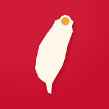

Taiwan 2027
WenBin & Kelly · 台灣之旅
Opening your trip… 開啟中…
Add to your Home Screen · 加到主畫面
Open the planner · 開啟行程
- Tap Share (the square with an arrow) · 點「分享」
- Tap Add to Home Screen · 點「加入主畫面」
- Tap Add · 點「新增」
This link is missing the trip code. Ask WenBin for the full link.
這個連結缺少行程代碼，請跟 WenBin 要完整連結。